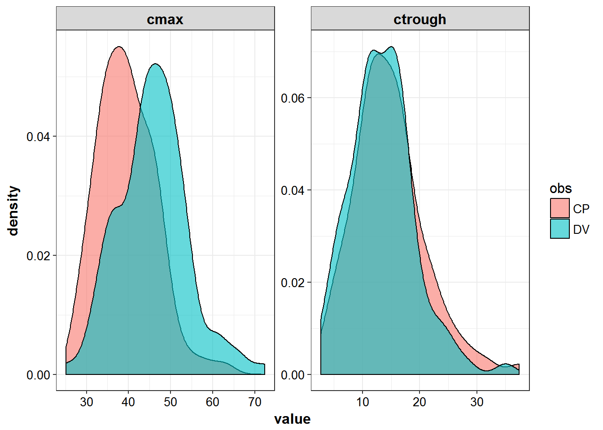

3 Dataset Creation
library(knitr)
library(PKPDmisc)
library(tidyverse)
library(vancomycin)
library(mrgsolve)source("../scripts/generate_demographics.R")
#>
#> Attaching package: 'magrittr'
#> The following object is masked from 'package:purrr':
#>
#> set_names
#> The following object is masked from 'package:tidyr':
#>
#> extractmodels <- source("../models/models.R")$value
#> model dir set to C:/Users/devin/Documents/Repos/bayesiantutorial/models
#> cache location set to C:\Users\devin\Documents\Repos\bayesiantutorial\models\.modelcache
#> Compiling vanc_stockmann ...
#> done.3.1 Generate data for mrgsolve
start with a baseline of having 100 individuals worth of data, can scale to different amounts of individuals later
set.seed(1234567)
NIDS <- 100demogs <- generate_demographics(NIDS) %>% mutate(ID = 1:nrow(.),
PMA = PMA/7 # in weeks for stockmann model
)for_dosing <- demogs %>%
mutate(
CMT = 1,
EVID = 1,
TIME = 0
) %>% select(ID, everything())all_dosing <- for_dosing %>% group_by(ID) %>%
nest() %>%
mutate(dose = map(data, ~ dosing_6bin_pna_wt(.$AGE, .$WT))
) %>% unnest() Dose for 8 days
all_dosing <- all_dosing %>%
mutate(addl = as.integer(ceiling(24/II*8)))kable(head(all_dosing, n = 15))| ID | WT | CRE | AGE | PMA | HT | SEX | CMT | EVID | TIME | DOSE | II | addl |
|---|---|---|---|---|---|---|---|---|---|---|---|---|
| 1 | 1.74 | 0.972 | 16.13 | 35.7 | 39.5 | FEMALE | 1 | 1 | 0 | 26.1 | 12 | 16 |
| 2 | 2.54 | 0.472 | 31.81 | 40.1 | 53.2 | FEMALE | 1 | 1 | 0 | 38.1 | 8 | 24 |
| 3 | 3.62 | 0.377 | 16.79 | 37.0 | 48.1 | FEMALE | 1 | 1 | 0 | 54.3 | 8 | 24 |
| 4 | 1.78 | 0.302 | 8.86 | 33.0 | 38.3 | FEMALE | 1 | 1 | 0 | 26.7 | 12 | 16 |
| 5 | 3.34 | 0.254 | 15.48 | 41.4 | 39.6 | FEMALE | 1 | 1 | 0 | 50.1 | 8 | 24 |
| 6 | 2.66 | 0.604 | 32.57 | 35.9 | 51.9 | FEMALE | 1 | 1 | 0 | 39.9 | 8 | 24 |
| 7 | 2.32 | 0.674 | 3.53 | 38.1 | 45.8 | MALE | 1 | 1 | 0 | 34.9 | 12 | 16 |
| 8 | 3.31 | 0.375 | 58.36 | 42.0 | 45.5 | FEMALE | 1 | 1 | 0 | 49.6 | 8 | 24 |
| 9 | 2.19 | 0.774 | 6.37 | 30.9 | 28.6 | MALE | 1 | 1 | 0 | 32.9 | 12 | 16 |
| 10 | 2.33 | 1.289 | 12.62 | 35.4 | 44.3 | FEMALE | 1 | 1 | 0 | 34.9 | 8 | 24 |
| 11 | 2.52 | 0.219 | 65.33 | 41.2 | 46.6 | MALE | 1 | 1 | 0 | 37.8 | 8 | 24 |
| 12 | 6.92 | 0.558 | 96.26 | 60.0 | 69.0 | MALE | 1 | 1 | 0 | 103.8 | 8 | 24 |
| 13 | 1.47 | 0.932 | 7.76 | 31.4 | 34.1 | FEMALE | 1 | 1 | 0 | 22.1 | 12 | 16 |
| 14 | 3.26 | 0.262 | 25.95 | 38.5 | 60.2 | FEMALE | 1 | 1 | 0 | 48.9 | 8 | 24 |
| 15 | 3.14 | 0.391 | 68.77 | 41.7 | 44.7 | MALE | 1 | 1 | 0 | 47.2 | 8 | 24 |
vanc_stockmann <- models$use("vanc_stockmann")Normalize column capitalizations to make mrgsolve happy
mrg_data <- bind_cols(
all_dosing %>% select(ID),
all_dosing %>% select(everything(), -ID) %>% lowercase_names()
) %>% mutate(amt = dose)raw_sim <- vanc_stockmann %>% data_set(mrg_data) %>% mrgsim(end = 10*24, delta = 2) %>%
as.data.frame %>% as_data_frame %>% capitalize_names()
#> Dropping non-numeric columns: sex3.1.1 Check distribution of trough values at SS
peak_trough <- raw_sim %>% filter(between(TIME, 150, 200)) %>%
select(ID, TIME, CP, DV) %>%
gather(obs, value, CP, DV) %>%
group_by(ID, obs) %>%
summarize(ctrough = min(value),
cmax = max(value))Peak and trough values are representative of real observations
peak_trough %>%
gather(sample, value, ctrough, cmax) %>%
ggplot(aes(x = value)) +
geom_density(aes(fill = obs), alpha = 0.6) +
facet_wrap(~sample, scales = "free") + theme_bw() +
base_theme()
- take simulated values and prepare for nonmem estimation
from_sim <- raw_sim %>%
distinct(ID, TIME, DV)
from_orig <- mrg_data %>%
capitalize_names() %>%
select(
ID,
TIME,
WT,
CRE,
AGE,
PMA,
HT,
SEX,
CMT,
DOSE,
II,
ADDL
)data_for_nonmem <- left_join(from_sim, from_orig) %>%
group_by(ID) %>%
fill(WT:CMT) %>%
mutate(
EVID = ifelse(DV == 0, 1, 0)
) %>%
## don't need to go too far after final dose for estimation purposes
## also don't n
filter(TIME < 216) %>%
## don't need 0 concentration time point as not realistic
distinct(ID, TIME, .keep_all = TRUE)
#> Joining, by = c("ID", "TIME")3.1.2 write data for nonmem
write_nonmem(data_for_nonmem, "../modeling/mdata/rich_100.csv")devtools::session_info()
#> Session info --------------------------------------------------------------
#> setting value
#> version R version 3.3.2 (2016-10-31)
#> system x86_64, mingw32
#> ui RTerm
#> language (EN)
#> collate English_United States.1252
#> tz America/New_York
#> date 2016-12-06
#> Packages ------------------------------------------------------------------
#> package * version date
#> assertthat 0.1 2013-12-06
#> backports 1.0.4 2016-10-24
#> bookdown 0.2 2016-11-12
#> codetools 0.2-15 2016-10-05
#> colorspace 1.2-7 2016-10-11
#> DBI 0.5-1 2016-09-10
#> devtools 1.12.0 2016-06-24
#> digest 0.6.10 2016-08-02
#> dplyr * 0.5.0 2016-06-24
#> evaluate 0.10 2016-10-11
#> ggplot2 * 2.1.0.9001 2016-11-07
#> gtable 0.2.0 2016-02-26
#> highr 0.6 2016-05-09
#> htmltools 0.3.5 2016-03-21
#> httpuv 1.3.3 2015-08-04
#> knitr * 1.15 2016-11-09
#> labeling 0.3 2014-08-23
#> lazyeval 0.2.0 2016-06-12
#> magrittr * 1.5 2014-11-22
#> MASS 7.3-45 2016-04-21
#> memoise 1.0.0 2016-01-29
#> mime 0.5 2016-07-07
#> miniUI 0.1.1 2016-01-15
#> mrgsolve * 0.7.6.9029 2016-12-06
#> munsell 0.4.3 2016-02-13
#> overseer * 0.0.1 2016-12-06
#> PKPDmisc * 0.4.4.9000 2016-11-02
#> plyr 1.8.4 2016-06-08
#> purrr * 0.2.2 2016-06-18
#> R6 2.2.0 2016-10-05
#> Rcpp 0.12.8 2016-11-17
#> RcppArmadillo 0.7.500.0.0 2016-10-22
#> readr * 1.0.0 2016-08-03
#> rmarkdown 1.2 2016-11-21
#> rprojroot 1.1 2016-10-29
#> scales 0.4.0.9003 2016-11-07
#> shiny 0.14.2 2016-11-01
#> stringi 1.1.2 2016-10-01
#> stringr 1.1.0 2016-08-19
#> tibble * 1.2 2016-08-26
#> tidyr * 0.6.0 2016-08-12
#> tidyverse * 1.0.0 2016-09-09
#> vancomycin * 0.0.2 2016-11-08
#> withr 1.0.2 2016-06-20
#> xtable 1.8-2 2016-02-05
#> yaml 2.1.13 2014-06-12
#> source
#> CRAN (R 3.3.2)
#> CRAN (R 3.3.2)
#> CRAN (R 3.3.2)
#> CRAN (R 3.3.2)
#> CRAN (R 3.3.2)
#> CRAN (R 3.3.2)
#> CRAN (R 3.3.2)
#> CRAN (R 3.3.2)
#> CRAN (R 3.3.2)
#> CRAN (R 3.3.2)
#> Github (hadley/ggplot2@70c3d69)
#> CRAN (R 3.3.2)
#> CRAN (R 3.3.2)
#> CRAN (R 3.3.2)
#> CRAN (R 3.3.2)
#> CRAN (R 3.3.2)
#> CRAN (R 3.3.2)
#> CRAN (R 3.3.2)
#> CRAN (R 3.3.2)
#> CRAN (R 3.3.2)
#> CRAN (R 3.3.2)
#> CRAN (R 3.3.2)
#> CRAN (R 3.3.2)
#> Github (metrumresearchgroup/mrgsolve@d92f31a)
#> CRAN (R 3.3.2)
#> local
#> Github (dpastoor/PKPDmisc@beae2a6)
#> CRAN (R 3.3.2)
#> CRAN (R 3.3.2)
#> CRAN (R 3.3.2)
#> CRAN (R 3.3.2)
#> CRAN (R 3.3.2)
#> CRAN (R 3.3.2)
#> CRAN (R 3.3.2)
#> CRAN (R 3.3.2)
#> Github (hadley/scales@d58d83a)
#> CRAN (R 3.3.2)
#> CRAN (R 3.3.2)
#> CRAN (R 3.3.2)
#> CRAN (R 3.3.2)
#> CRAN (R 3.3.2)
#> CRAN (R 3.3.2)
#> Github (dpastoor/vancomycin@2436cb6)
#> CRAN (R 3.3.2)
#> CRAN (R 3.3.2)
#> CRAN (R 3.3.2)